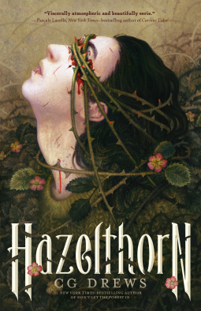

Hazelthorn by CG Drews
Posted on July 9, 2026
I received an advance copy of this book from NetGalley to facilitate my review. This does not affect my opinion of the book or the content of my review.

Title: HazelthornAuthor: CG Drews
Publisher: Feiwel & Friends
Publication Date: October 28, 2025
Genre(s): YA Horror
Format: eARC
Source: NetGalley
Rating:
AN INSTANT #1 NEW YORK TIMES BESTSELLER!
CG Drews, instant New York Times>bestselling author of Don't Let the Forest In, returns with another deeply unsettling and yet hauntingly beautiful tale of murder and botanical body horror, perfect for fans of Andrew Joseph White, Annihilation, andWe Have Always Lived in the Castle.
Evander has lived like a ghost in the forgotten corners of the Hazelthorn estate ever since he was taken in by his reclusive billionaire guardian, Byron Lennox-Hall, when he was a child. For his safety, Evander has been given three ironclad rules to follow:
He can never leave the estate. He can never go into the gardens. And most importantly, he can never again be left alone with Byron's charming, underachieving grandson, Laurie..
That last rule has been in place ever since Laurie tried to kill Evander seven years ago, and yet somehow Evander is still obsessed with him.
When Byron suddenly dies, Evander inherits Hazelthorn’s immense gothic mansion and acres of sprawling grounds, along with the entirety of the Lennox-Hall family's vast wealth. But Evander's sure his guardian was murdered, and Laurie may be the only one who can help him find the killer before they come for Evander next.
Perhaps even more concerning is how the overgrown garden is refusing to stay behind its walls, slipping its vines and spores deeper into the house with each passing day. As the family’s dark secrets unravel alongside the growing horror of their terribly alive, bloodthirsty garden, Evander needs to find out what he’s really inheriting before the garden demands to be fed once more.
Hazelthorn is one of those books that took me forever to read, for no good reason. I literally have no reason why it took me so long to actually sit down and read this book – other than perhaps a combination of mood reading and school. I say this because Hazelthorn is an amazing book.
Characters
There are a lot of characters in this book – some designed to make you hate them, clearly. Characters like Oleander, Dawes, and Bane just made me want to reach into the pages and punch the daylights out of them. Azalea wasn’t much better, but at least it was obvious that she was only in it for herself.
Laurie is an interesting character. He’s arrogant, rude, and acts like he hates everyone and everything. And, I suppose, in a way, he does. But the secrets he hides are why he’s the way he is. I liked Laurie despite his flaws – because who doesn’t have flaws. Although I have to admit, if he were real, I probably wouldn’t like him.
Evander is our hapless main character and narrator and he reminds me in ways of Audrina from V. C. Andrews’ **My Sweet Audrina**. He remembers only tiny glimpses of his past. He relies on the stories that everyone else tells him. He has one person insisting that he needs to remember. But, unlike Audrina – who knew who she was and what had happened to her, but couldn’t remember – Evander knows nothing of who he is. I loved his character because he was raw, he was real, and he was broken. I can’t help but love a broken character.
Atmosphere
A mysterious mansion with plants literally everywhere, a garden that seems to be alive and have a mind of its own… what better place to set a horror novel about a boy who can’t remember his past and has been told never, ever to go out into the garden. Hazelthorn estate is creepy and full of hidden nooks and crannies – and the garden is an entity unto itself. And mind you – the entire book takes place on this estate. You start and end there – and you never leave.
Writing
CG Drews’ writing style leans more to the darkly ethereal. It is creepy, mysterious, dark, moody, and brooding. The descriptive nature of their writing would have been considered flowery by many, but I wouldn’t call it that. Something darker than flowers exists here. The writing makes you stop, consider what you’ve read, because if you don’t, you’ll never understand.
Plot
The initial plot for Hazelthorn doesn’t seem all that unique – until you understand what is at stake here. Evander isn’t related to Byron Lennox-Hall, yet inherits his fortune and the estate. Or does he? And what about this estate makes it so precious to everyone in the Lennox-Hall family that they are clamoring to become Evander’s guardian? As this plot unfolds, you start to realize that things here aren’t what they seem – at all. Not even the people are who they seem.
Intrigue
Once I was into the book, I was into it. It took me a bit to fully immerse myself into the story, but that’s a me-problem, not a book-problem. Because the book was intriguing – was Byron murdered? If so, who did it? Why? Why did he leave Evander the Hazelthorn estate? And what is wrong with Evander? Trust me, the questions get answered but maybe not in the way you think.
Relationships
The only true relationship in this book is the one between Laurie and Evander. It is a relationship fraught with hatred and love at the same time. A relationship born from a false memory – something planted inside Evander’s head to make him hate Laurie. To make him never want to be around him, even if it doesn’t work. And as events unfold and things become clear, the relationship is the only thing that truly matters.
Ending
I loved the ending to this book. It made the book complete and final. And it was perfect. It took a minute to realize what was happening until Evander says something, but then everything clicks into place. I wouldn’t have wanted a different ending.
I gave this book 5 stars because it was simply amazing. The plant horror, the missing memories, the mystery of who killed Byron, the family members who didn’t belong there… all of it was amazing. I can’t wait to read the next book by CG Drews!